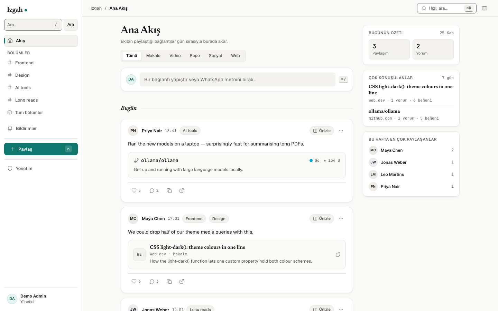
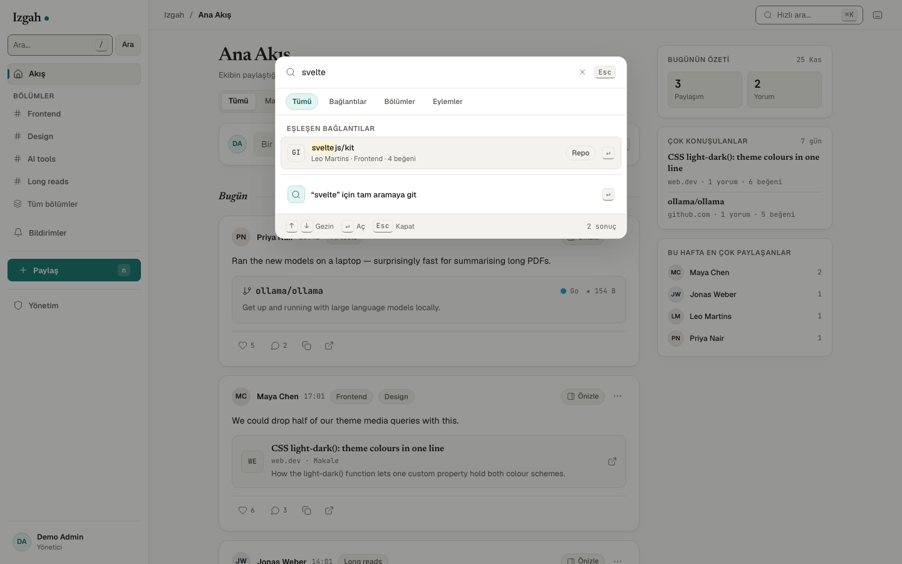

Açık kaynak · kendi sunucunuzda · AGPL-3.0
Ekibinizin ortak bağlantı arşivi
İyi bağlantıları sohbet gruplarında kaybetmeyin. İzgah, küçük bir ekibe bulduğu videoları, kod depolarını, gönderileri ve makaleleri paylaşacağı sakin bir yer sunar; sonra tartışırsınız ve saniyeler içinde yeniden bulursunuz.
izgah.com yalnızca projeyi tanıtır — her ekip kendi örneğini kendi alan adında çalıştırır.

Algoritma için değil, ekip için
İzgah bilinçli olarak küçüktür: bir akış, birkaç bölüm ve gerçekten bulan bir arama. Her şey JavaScript olmadan da çalışır ve hiçbir veri sunucunuzdan çıkmaz.
-
İçeriğe duyarlı akış
Videolar, kod depoları, sosyal gönderiler ve makaleler kendilerine uygun kartlarla, sunucunuzda önbelleğe alınan önizlemelerle görünür.
-
Bölümler
Konuları yöneticiler düzenler. Bir bağlantı birden fazla bölümde olabilir ya da akışa düşmeden bir bölümde sessizce durabilir.
-
Bulan arama
Başlık, not ve URL parçalarında Türkçe ve İngilizce tam metin arama ve ⌘K komut paleti.
-
Tarayıcı eklentileri
Açık sekmeyi Chrome, Firefox veya Safari'den Alt+Shift+I ya da sağ tık menüsüyle paylaşın.
-
Yerinde tartışma
Beğeniler, yorumlar ve bildirimler her bağlantının yanındadır; tekrar paylaşımlar ilk paylaşıma işaret eder.
-
Varsayılan olarak erişilebilir
WCAG 2.2 AA'yı karşılayan açık, koyu, loş ve yüksek kontrast temalar, tam klavye desteği, Türkçe veya İngilizce arayüz.

Kendi sunucunuzda çalıştırın
Tek Docker konteyneri ve PostgreSQL. Harici e-posta, kuyruk veya önbellek servisi yok — davetler, yöneticinizin paylaştığı bağlantılardır.
git clone https://github.com/gorkemio/izgah.git
cd izgah
export POSTGRES_PASSWORD='…' \
BETTER_AUTH_SECRET="$(openssl rand -hex 32)" \
ORIGIN='https://links.example.com' \
DEFAULT_LOCALE=tr APP_TIME_ZONE=Europe/Istanbul
docker compose -f docker-compose.prod.yml up -d --build
docker compose -f docker-compose.prod.yml exec app \
node build/cli.js create-admin --email siz@example.com --name "Siz"- Bir alan adını sunucunuza yönlendirin ve HTTPS için önüne Caddy, Traefik veya Nginx koyun.
- Yığını başlatın; veritabanı göçleri kendiliğinden çalışır.
- CLI'nin yazdırdığı davet bağlantısını açın, parolanızı belirleyin ve ekibinizi davet edin.
-
Varsayılanları seçin:
DEFAULT_LOCALE,APP_TIME_ZONEveINSTANCE_NAME.
Docker Compose + Caddy ve Dokploy için adım adım kılavuzlar depoda (İngilizce).
Her örnek için tek eklenti
İzgah eklentisini kurun, ayarlarını açın; ekibinizin adresini ve Ayarlar → API anahtarları ekranından aldığınız kişisel anahtarı girin. Eklenti başka sitelere erişim istemez ve bağlantıları yalnızca seçtiğiniz sunucuya gönderir. Eklentiler nasıl çalışır.